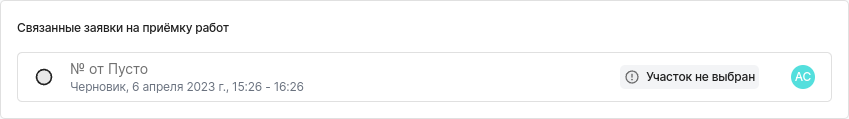

Отображение представления — viewDisplay#
Определение#
Компонент используется для отображения представлений в форме. Основное предназначени компонента — отображать связи между разными формами. То есть, если существуют какие-то формы связанные с той, в которой вы хотите использовать viewDisplay, то этот компонент сможет их отобразить.
Тип компонента в конфигураторе: viewDisplay.
Внешний вид#
JSON-схема для создания компонента в конфигураторе:
"selectRequest": {
"type": "object",
"order": [
"requestDisplay"
],
"properties": {
"requestDisplay": {
"type": "viewDisplay",
"title": "Связанные заявки на приёмку работ",
"fields": [
"id"
],
"viewId": "63441afa28e2820084000487",
"variables": {
"issuepickerId": ""
}
}
}
}
Как оно выглядит в пользовательском приложении:
{kind=link}
Свойства#
"type": "viewDisplay",
"title": "Название компонента",
"description": "Описание",
"viewId": "...",
"fields": [ "..." ],
"variables": [
{
[ "..." ]
}
],
"hidden": false,
"helperText": "..."
}
Свойство |
Определение |
Тип данных |
|---|---|---|
|
Тип элемента. Для этого компонента — это всегда |
string |
|
Название компонента, которое отображается в форме. |
string |
|
Описание компонента, которое отображается в окне выбора значений. |
string |
|
ID представления, которое вы хотите отобразить. |
string |
|
Ассоциативный массив с данными для шаблонизации Query выбранного представления. Если это поле заполнено, то эти данные должны быть отображены и в query-запросе представления. |
array of objects |
|
Это стандартное свойство для всех компонентов.
При установке значения |
boolean |
|
Описание поля. Это стандартное свойство и отображается как текст под полем компонента. |
string |
Модель данных#
Данные сохраняются в FormInstances в поле Data в виде JSON.
Заполненная форма в пользовательском приложении:
После сохранения данные попадают в FromInstances в конфигураторе. Они сохраняются также в JSON формате:
"selectRequest": {
"requestDisplay": [
{
"id": "642eba8806feb040a7ac6f5e"
}
]
}
В FormInstances попадают все данные о документе.
Примеры использования#
Пример ниже используется для отображения связанных с созданных замечанием заявок на приёмку работ.
В variables в параметр issuepickerId передаётся id текущей формы. Благодаря этому происходит фильтрация экземпляров форм.
"selectRequest": {
"type": "object",
"order": [
"requestDisplay"
],
"properties": {
"requestDisplay": {
"type": "viewDisplay",
"title": "Связанные заявки на приёмку работ",
"fields": [
"id"
],
"viewId": "63441afa28e2820084000487",
"variables": {
"issuepickerId": ""
}
}
}
}
Примечание
Стоит упомянуть, что issuepickerId — это не свойство по умолчанию и наименование может быть любым.
Главное, чтобы он совпадал в хуке и query-запросе.
Если планируете использовать больше одного viewDisplay в форме, то рекомендуем придумывать разные наименования, чтобы избежать ошибок.
Комментарии#
Чтобы свойство variables работало корректно, необходимо выполнить ещё два условия:
В хуке типа
viewUpdateдолжно быть прописано условие, которое сравниваетissuepickerIdсidэкземпляра формы. В случае отличия, присваиваетissuepickerIdзначениеidэкземпляра формы.if (formCopy.scheme.properties.selectRequest.properties.requestDisplay.variables.issuepickerId !== formInstance.id) { formCopy.scheme.properties.selectRequest.properties.requestDisplay.variables.issuepickerId = formInstance.id }
В query-запросе отображаемого представления должна быть фильтрация по
issuepickerId. Пример реализации:{"value": "{\"id\":\"${issuepickerId}\"}", "operator": "in", "property": "data.selectIssue.issue"}